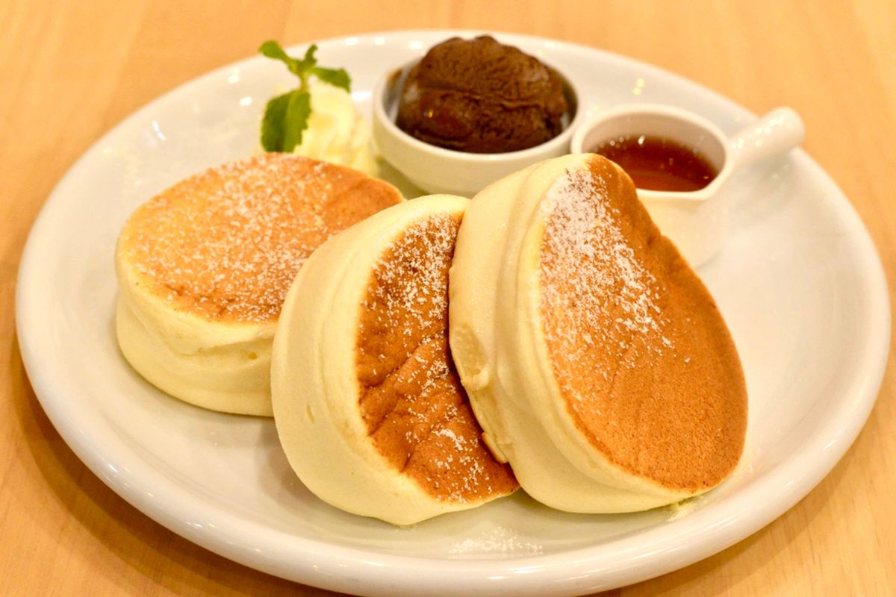

Resep Pancake

Pancake adalah kue datar berbahan dasar tepung, telur, dan susu. Cocok untuk sarapan dengan tambahan madu, selai, atau buah.
Bahan-bahan:
- 200 gram tepung terigu
- 2 butir telur
- 300 ml susu cair
- 2 sdm gula pasir
- 1 sdt baking powder
- Sejumput garam
- Mentega untuk olesan
Cara Membuat:
- Campur semua bahan kering dalam mangkuk.
- Kocok telur dan susu, lalu tuang ke bahan kering. Aduk hingga rata.
- Panaskan wajan dengan sedikit mentega, tuang adonan secukupnya, bentuk lingkaran.
- Masak hingga muncul gelembung, balik, dan masak sisi lainnya.
- Sajikan hangat dengan topping sesuai selera.